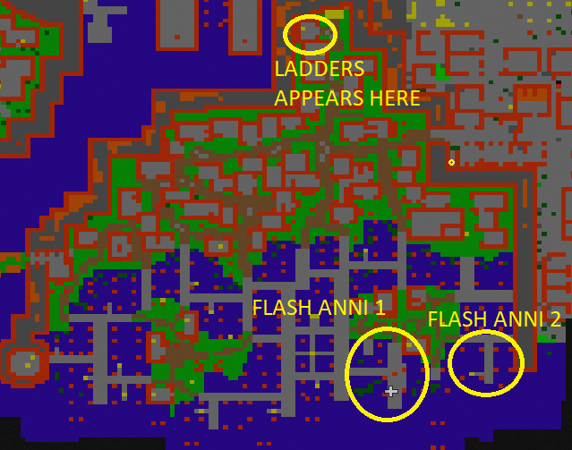
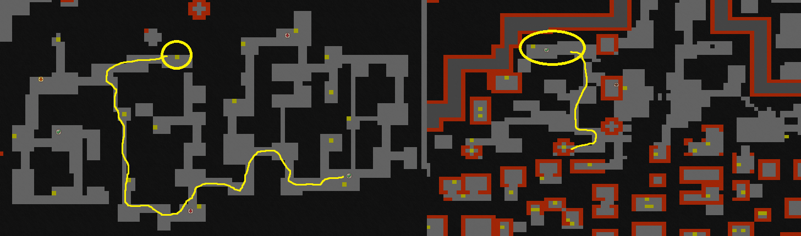
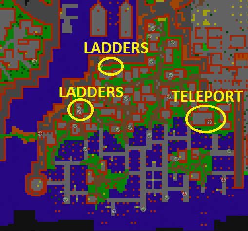

Yalahar abysses of Achernar: Part 3
Requirement:
Recommended level;
Legend: It took over 5 months to first team to clear this area. The legendary leader was Lucifers Son who led the team from start to finish.
This is the part where alot of people will trip. It is real a real challenge against time and wisdom and team work. You need to know exactly what you are doing, otherwise it might be your doom. On the lower level is alot of hard monsters by map spawn such as Cygnus, Achernar and Orionis. Then there are in total 4 x Flash annihilators you need to complete. First 2 annihilators on the main floor will summon Wizard boss that you need to kill. They will keep themselves invisible every 0.5 seconds, they will only run away and won’t do any damage. But their hitpoint pool is high which takes it some time kill.
Start by clearing the quest area from the monsters there. Then go for Flash Annihilator 1 and find the 1st Wizard boss. It spawns randomly between 0-2 minutes somewhere in the area of abyss 3. Find it and kill it. There’s a time limit with this raid of 20 minutes. If you don’t kill it before that, it will disappear. If you kill it before that, you have to wait for the raid to be over.
Now move on to the Flash Annihilator 2. Pull it and find the 2nd Wizard boss and kill it. After finding and killing it go North, there’s ladders appeared from 1st boss and teleport from the second. Go up with a plan. There’s gonna be alot of different bosses. Stack up, some knights/paladins heal, use rings if necessary and rest just attack.

Get past this area to the end and hop into the teleporter. Before going up the stairs pull the lever down there because you can’t come back. Same thing with the lever up, remember to pull it.
Clear the East wall from the monsters to get to the teleport before it disappears. There’s gonna be alot of different kinds of bosses, at the end is cobratrons and war elephants. Best tactic so far has been to have 6 blockers side by side blocking the monsters as the drunkenness will move them around alot. That way it’s easier to prevent the formation from breaking up and healers behind won’t end up in depot.
Now that you have come this far you can catch your breath: for a second. Pull the 3rd Flash Annihilator and brace yourselves with loads of monsters to coming at you in a blink of an eye. No way to run, downstairs will be Vermithrax so lower levels will definitely die if they are around. This Annihilator brings a teleport to the East inside a house.


Then start going North, find a way to get over the monsters to the Flash Annihilator 4. Watch for traps up there as you might fall down with no way back between Cygnuses and Achernars! You will probably get there with loads of time to consume still as you need to wait some time before you can pull the lever. It is recommended to clear downstairs where the ladders will appear as you pull the 4th Anni’s lever.
Up there is a lever and you need to be quick after that as there’s gonna be 10 minute timer to get to the teleport in the middle. You get there by going from East house. Then you are done with the Abyss and head to the Spacewalk.
